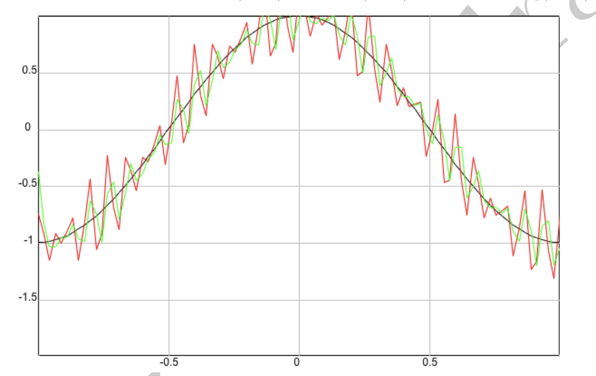
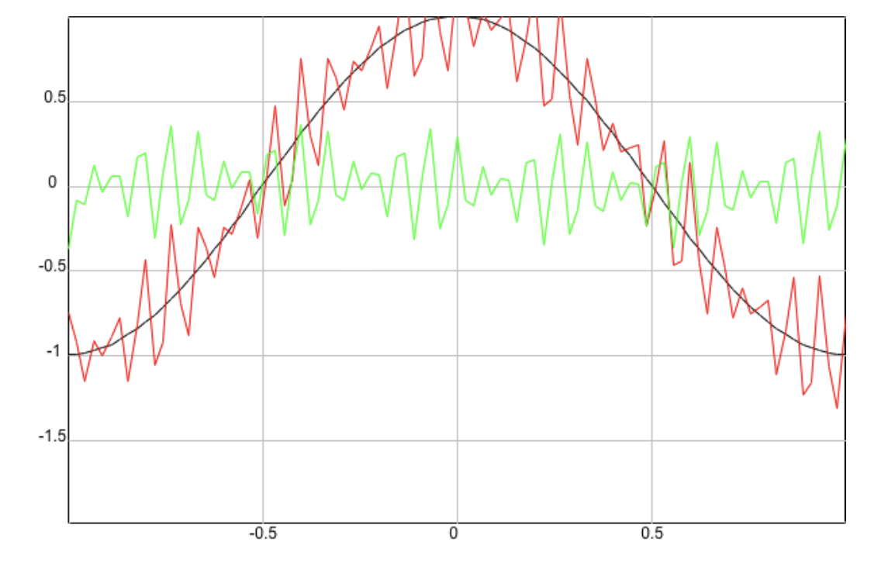

Show that if the real matrix \(A\) is orthogonally diagonalizable, then \(A\) is symmetric.
5.4.13
Say \(P^{-1} A P=D, P\) orthogonal so that \(P^{-1}=P^{T}\) and \(D\) diagonal. Then \(A=P D P^{T}\), so \(A^{T}=\left(P D P^{T}\right)^{T}=\left(P^{T}\right)^{T} D^{T} P^{T}=P D P^{T}=A\).
2
Use a technology tool to compute an orthonormal basis for the null space and column space of the following matrices with the SVD and Corollary 5.7. You will have to decide which nearly-zero terms are really zero.
Use the pseudoinverse to find a least squares solution \(A \mathbf{x}=\mathbf{b}\), where \(A\) is a matrix from Exercise 3 with corresponding right-hand side below.
\((2,2,6,5)\)
\((2,3,1)\)
\((4,1,2,3)\)
5.6.4
\((1.10513,-1.67692,0.83333)\)
\((0.46032,0.30159,0.49206)\)
\((0.36721,2.03513,-2.67775,0.68946,-2.10351)\)
4
Use a technology tool to construct a \(3 \times 10\) table whose \(j\) th column is \(A^{j} \mathbf{x}\), where \(\mathbf{x}=(1,1,1)\) and \(A=\left[\begin{array}{rrr}10 & 17 & 8 \\ -8 & -13 & -6 \\ 4 & 7 & 4\end{array}\right]\). What can you deduce about the eigenvalues of \(A\) based on inspection of this table? Give reasons. Check your claims by finding the eigenvalues of \(A\).
Largest eigenvalue must be greater than one because the numbers grow, and complex because they take two iterations to change sign. But the complex part probably comes in pairs which cancel each other.
5
Note
Please note that in definition 6.20 in your book, there is an apparent error. The formula should be \(H(\zeta)=\sum_{n=-\infty}^{\infty} h_n e^{-i \zeta n}\). Note the \(n\) in the exponent!
The sequence in the first paragraph of page 438 makes this clear, where it says “Here \(H(\zeta) = h_0 + h_1 e^{i \zeta} + \dots + h_L e^{i L \zeta}\).”
Compute the DTFT for the FIR filter \(\mathbf{h}=\left\{\frac{1}{2}, \frac{1}{2}\right\}\) and confirm that \(\mathbf{h}\) is a lowpass filter.
6.6.1
\(H(\zeta)=e^{i \zeta/2}\cos(\zeta/2)\), so \(|H(0)=1\) and \(H(\pi)=0\).
6
Compute the DTFT for the FIR filter \(\mathbf{h}=\left\{-\frac{1}{2}, \frac{1}{2}\right\}\) and confirm that \(\mathbf{h}\) is a highpass filter.
Thus \(|H(0)=0\) and \(H(\pi)=1\), as required for a high-pass filter.
7
Apply the filters of the previous two exercises to the sampling problem of Example 6.24 and graph the results as in Figure 2.
6.6.5 6.6.6


8
Compute the Fourier series for \(x(t) \in C_{P W}^{1}[-\pi, \pi]\), where \(x(t)=t^{2} / \pi,-\pi \leq t \leq \pi\) and graph \(x(t)\) and the partial Fourier sums with \(N=3,6\).